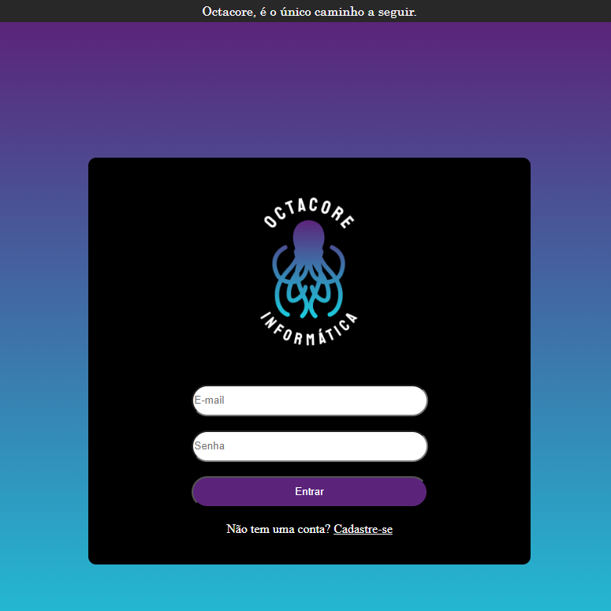
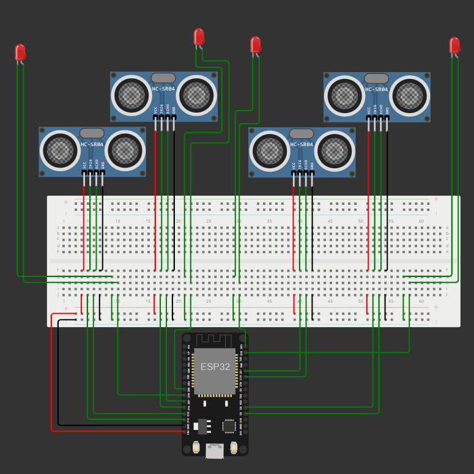
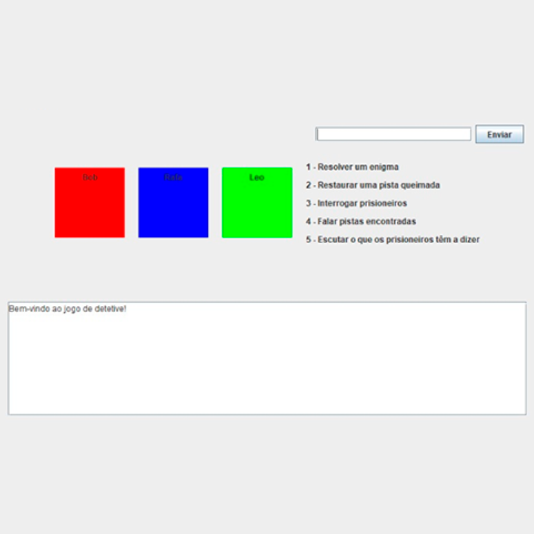
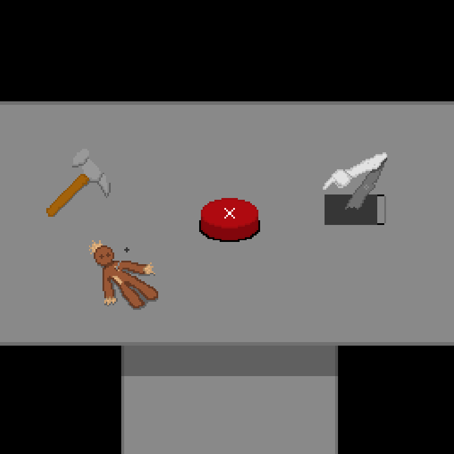
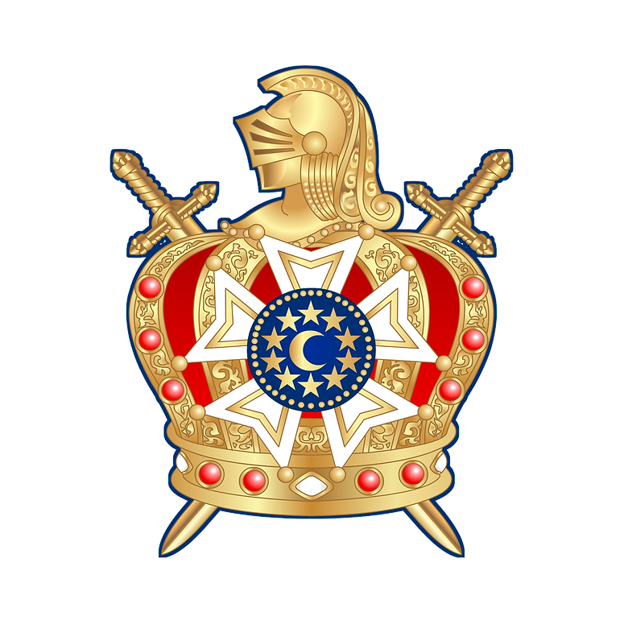

Henrique Tetilha
Portfolio de projetos
Olá, meu nome é Henrique e este portfolio é para contar um pouco da minha história e também apresentar meus projetos
Minha trajetória com a programação começa aos 15 anos de idade, onde eu descubro o que são as linguagens e para que cada uma serve, então fui atrás de cursos sobre e inicialmente para desenvolver jogos. Atualmente estou cursando Ciência da Computação na PUCPR e durante meus estudos aprendi várias linguagens como Python, C, C++, Java, SQL, Html, Css e JavaScript
Eu não guardei nenhum dos pequenos projetos que desenvolvi nesta época de ensino médio por não saber como, porém após entrar na faculdade participei de projetos como os citados abaixo.

Projeto em grupo feito para matéria de web, simulando uma loja de informática online, infelizmente não é possivel usar o backend pelo github
Github
Site

Projeto em grupo feito para matéria de experiência criativa, usamos conexão com um site usando Flask para a simulação de IOT feito no site Wokwi
Github
Simulação

Projeto em grupo para matéria de programação orientada a objetos que faz um jogo de adivinhações usando apenas Java e intefaces com Swing
Github

Projeto pessoal para criar um jogo clicker usando Gamemaker e GML. Atualmente em um estágio inicial de desenvolvimento
Github
Projeto Comunitário - Clínica de TIC
Projeto focado em auxiliar a comunidade com problemas em seus computadores ou celulares

Participação no capítulo Larmenius Nº 327 da ordem DeMolay
A Ordem DeMolay é uma organização juvenil dedicada ao desenvolvimento de jovens do sexo masculino, geralmente entre 12 e 21 anos. Fundada em 1919, ela busca promover valores como liderança, cidadania, respeito, e responsabilidade, utilizando ensinamentos que enfatizam a importância da ética e do serviço à comunidade.
Muitas vezes, a sociedade tem uma percepção errônea sobre a Ordem DeMolay, associando-a a práticas secretas, elitistas ou até mesmo satanistas. Na verdade, a ordem é aberta a qualquer jovem que deseje se aprimorar pessoalmente e se envolver em atividades sociais e filantrópicas. Ao contrário do que se pensa, a DeMolay não é uma organização secreta; suas reuniões são transparentes e focadas no aprendizado e na construção de amizades duradouras.
Durante minha participação na Ordem, envolvi-me em diversos eventos de caridade, incluindo a arrecadação de alimentos, entrega de doações, preparo de jantares beneficentes e assistência a idosos em asilos.
Instagram do Capítulo